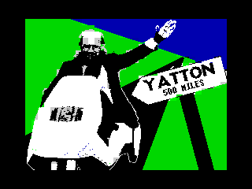
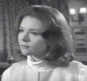

| Once again, we have a finely-tuned, hand-crafted, digitally-enhanced .TAP packed with action and adventure. You don't deserve us, you really don't. |
|
Journey to Yatton By Unsatisfactory Software Over the years, many games have been claimed to be the greatest of all time. Such games as Chaos, Tetris, Chase HQ and 3D Deathchase. Well, this one tops the lot. This is, without doubt, the best game of all time ever. The pinnacle of human achievement. There is no longer any point in anyone writing another computer game, because it cannot surpass this miracle of ingenuity. YS3 is proud and honoured to present... Chris Young's Journey to Yatton. (Cheers for the dosh, Chris.) |
 |
|  |
JOURNEY TO YATTON
The second in Unsatisfactory Software's popular series of "Journey To" games sees you as Sir Clive Sinclair, on his mission to deliver a ZX81 to somebody in Yatton. Taking a stockpile of spare batteries, you dust down the old C5 and set on your way. But, beware! The traffic around you moves significantly faster than your C5, and the drivers have no regard for the Highway Code, so be prepared to move out of their way! Still, it's only 500 miles away. As you approach the thundering metropolis* of Yatton, you will discover that the traffic builds up. When you start on your journey, you may not see another vehicle for miles, but eventually you could get stuck in traffic. Unfortunately, your brakes have failed, making it impossible to stop.... "A FUN-PACKED DRIVING GAME - IT'S ABSOLUTELY BRILLIANT!" David Darling * this is, of course, only an estimate |
| Download Smash .TAP! |
| Back to Contents |